这份数据不是"脏"，而是表面干净、内部错位：字段齐全、没有空行，但六类缺陷会顺着统计口径一路传导，直接改变结论。
| 编号 | 问题 | 如果不处理，会发生什么 |
|---|---|---|
| Q1 | 团体项目一行一人 | 按行加总会把同一枚奖牌重复计算，奖牌数被放大 2,840 枚 |
| Q2 | Sport 名称漂移 + 逗号拼接 | 同一大项被拆成四五条，项目排行与份额全部失真；89 行含逗号拼接 |
| Q3 | 2020 年起 Event 泛化为 Men/Women | 小项口径把整届数成一个项目，少算 702 个奖牌单位 |
| Q4 | 性别字段与项目名不一致 | 混合项目被判成单一性别，性别弧线出现假拐点 |
| Q5 | 1906 届、1956 双城、NOC 政体变迁 | 历史总榜名次与国别叙事错位（URS→EUN→RUS→ROC→AIN） |
| Q6 | 同一小项同色并列、双铜牌 | strict 与 NOC-aware 两种计法相差 702 个单位，口径不声明则不可比 |
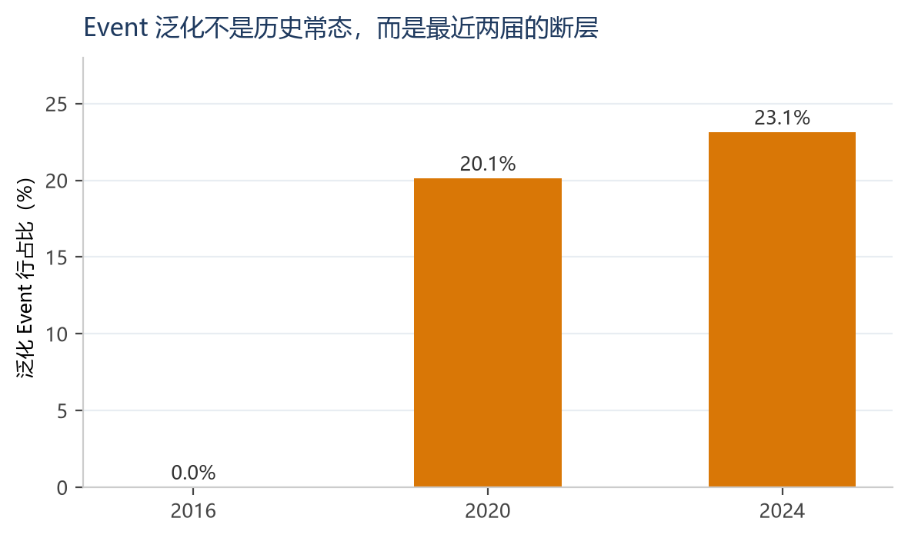
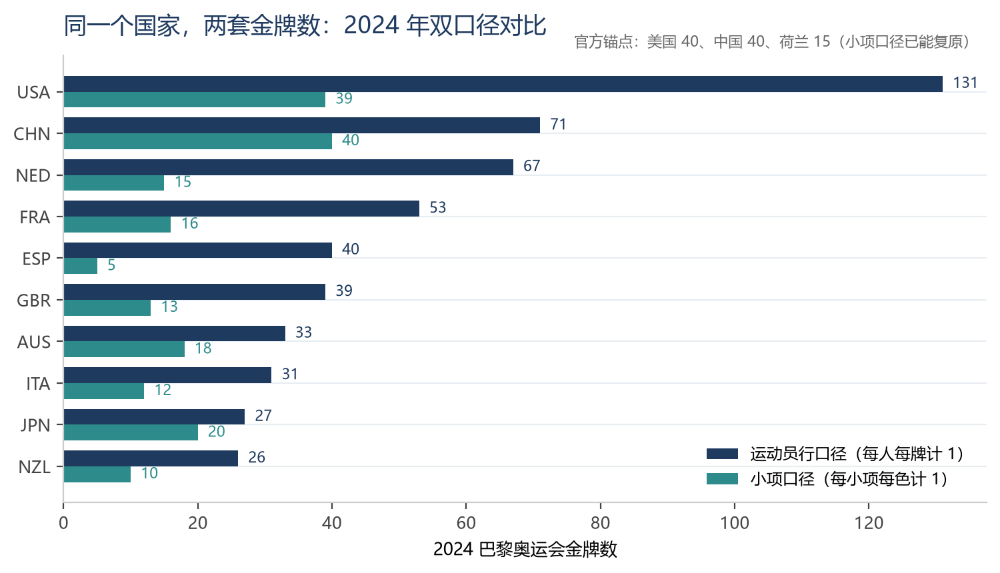
我们把口径压缩成两个可复现的定义：strict（同色并列、双铜牌只计 1）与 NOC-aware（每个获奖 NOC 各计 1）。两者对历史总量的影响如下：
| 指标 | strict | NOC-aware（本报告主口径） | 差 |
|---|---|---|---|
| 历史奖牌单位（含 1906） | 17,452 | 18,159 | +707 |
| 历史奖牌单位（不含 1906） | 17,233 | 17,935 | +702 |
| 2024 奖牌单位 | 1,034 | 1,027 | −7 |
| 2024 金牌 | — | 325 | — |
这条原则会在后文反复出现：同一个"第一"，在行口径、strict、NOC-aware 下可能分别是美国、美国、美国，但中国与法国的名次会互换；同一句"女性参与接近半数"，放到项目层就会立刻破裂。
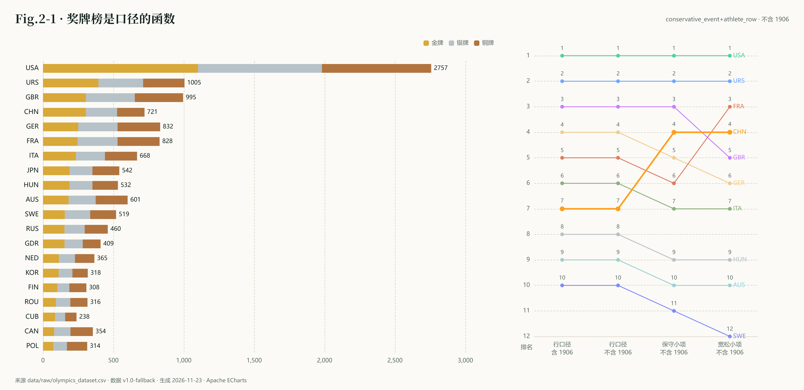
NOC-aware 口径下，美国以 2,756 枚居首，苏联 1,005、英国 995、德国 830、法国 826，中国以 721 枚居第 6。换回运动员行口径，美国立刻膨胀到 5,597 枚——多出的 2,841 枚几乎全部来自篮球、游泳接力、体操团体这类项目的人头重复。
比总量更有意思的是名次：中国按金牌排序在 NOC-aware 下第 4、按总量第 6，而换到运动员行口径跌到第 7——说明其优势集中在可去重的个人小项；法国在宽松上界口径下升到第 3，则暴露了团体项目上界对榜单的抬升。榜首不是事实，是分母的函数。
| 国家 | NOC-aware 金·银·铜 | NOC-aware 合计 | 运动员行合计 | 膨胀倍数 |
|---|---|---|---|---|
| 美国 | 1,101 · 880 · 775 | 2,756 | 5,597 | 2.03× |
| 苏联 | 394 · 317 · 294 | 1,005 | 2,063 | 2.05× |
| 英国 | 305 · 347 · 343 | 995 | 2,243 | 2.25× |
| 德国 | 250 · 278 · 302 | 830 | 1,938 | 2.33× |
| 法国 | 244 · 283 · 299 | 826 | 1,891 | 2.29× |
| 中国 | 305 · 221 · 195 | 721 | — | — |
膨胀倍数本身就是指标：德法高于美国，说明其奖牌更集中在赛艇、马术这类多人项目。中国金牌与英国持平、银铜少 274 枚，于是"金优先"第 4、"总量"第 6——同一组数字，两种排序。
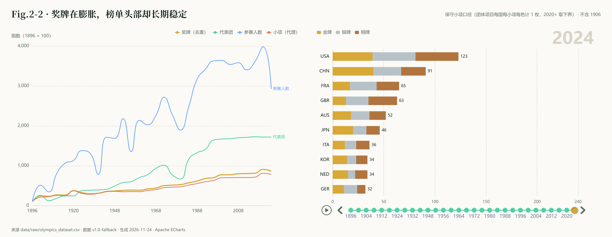
1896 年只有 12 个代表团、380 条参赛记录、120 个去重奖牌单位；到 2024 年，这三个数字变成 206、11,113、1,027，参赛规模约为 1896 年的 29 倍。与此同时，榜首美国的单届奖牌从 11 枚涨到 126 枚——增幅远小于参赛规模的膨胀。
把三个指数画在一起就能看出：奖牌曲线几乎与"小项数 + 参赛人数"同步，而不是与任何单一国家的产出同步。这意味着"奖牌总数破百"这件事本身没有跨届可比性，必须换成每人次或每小项口径，才能谈"变强"。后文所有逐届比较，都建立在这个前提上。
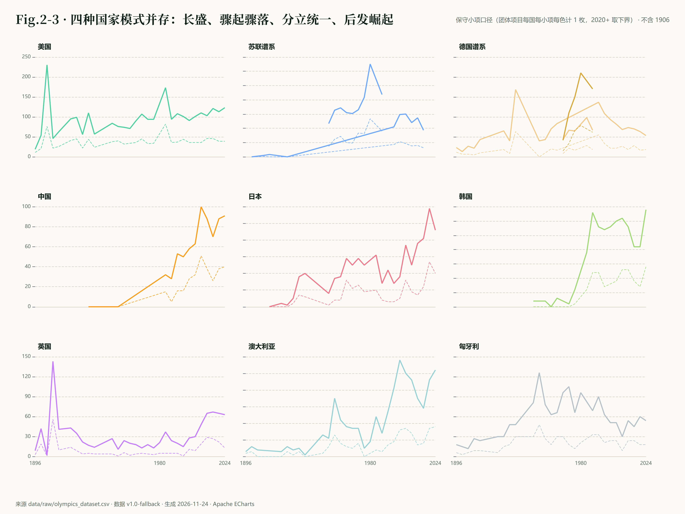
四种形状分别是：长盛型（美国，除 1980 抵制届外全程在线）、骤起骤落型（苏联谱系，1988 见顶后经独联体、俄罗斯、ROC 到 AIN 逐步回落）、断裂重组型（德国，1968–1988 两德分立、1992 后统一）、主场脉冲型（日本 1964、韩国 1988 在主办后跃升）。中国自 1984 年恢复参赛后持续爬坡，2008 主场到达峰值。
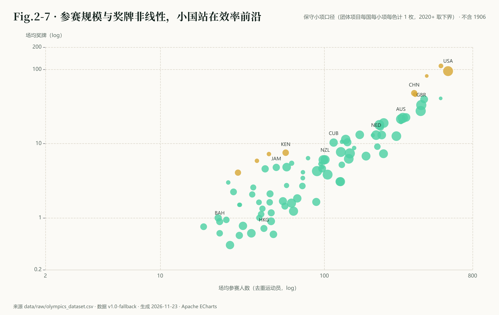
效率前沿与总量前沿并不重合：苏联场均 111.7 枚、每百人 0.217 枚，东德 0.194，美国 0.168；而阿塞拜疆、埃塞俄比亚这类小体量代表团效率也超过 0.13，绝对数却只有个位数。大国靠规模与项目覆盖，小国靠少数优势项目——这是两种完全不同的生存策略。
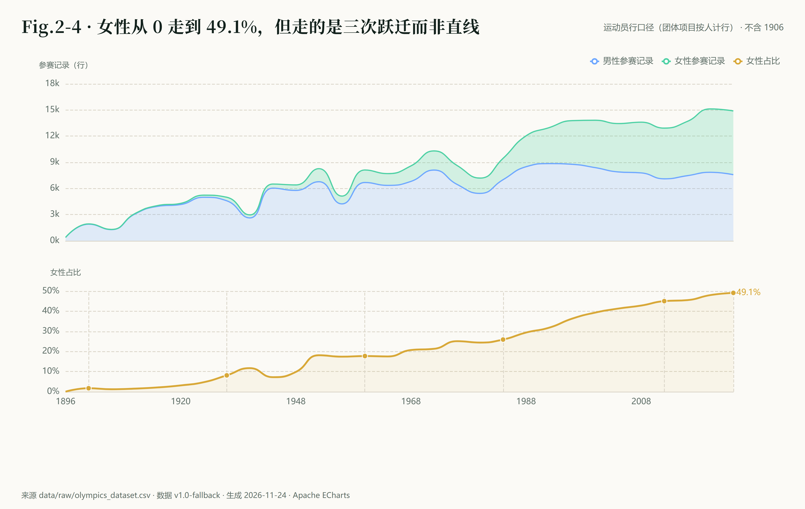
1900 年女性只占 1.7%，1928 年 8.1%，1960 年 17.7%，1984 年 25.9%，2012 年首次达到 45.0%，2024 年为 49.1%（7,312 条女性记录对 7,580 条男性记录）。三个跃迁点分别对应：1928 年田径与体操向女子开放、1960 年代规模扩张、1984 与 2012 年的项目扩容。
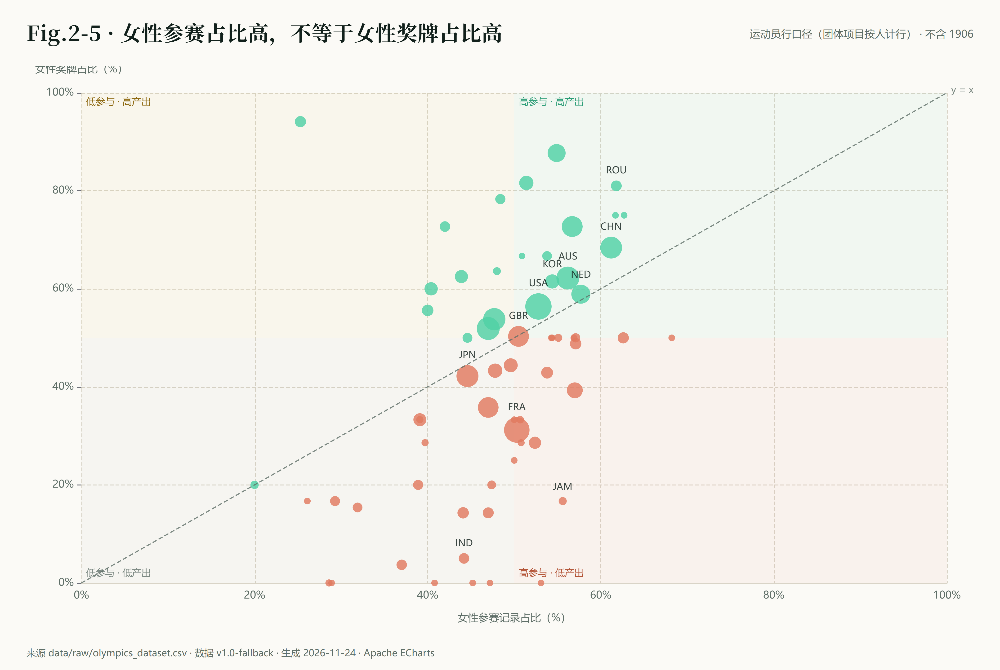
但"接近半数"是总量结论。牙买加女性参赛 55.6%、女性奖牌只占 16.7%，印度 44.2% 对 5.0%，双双落在"高参与、低产出"象限；荷兰 57.7% 对 58.9%、美国 52.8% 对 56.4% 才贴近对角线。派出多少女运动员，与拿到多少女性奖牌，是两件事。
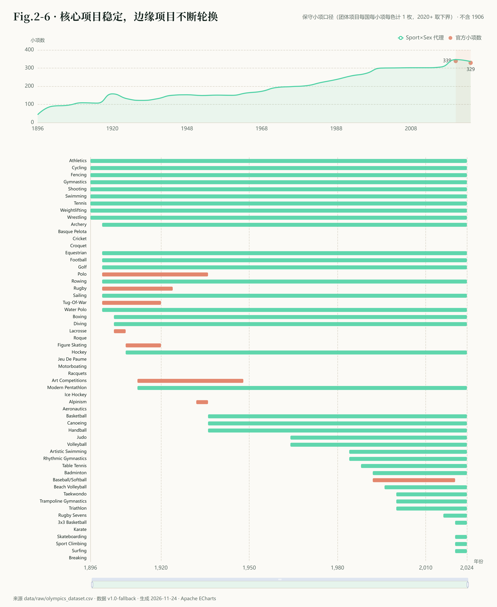
Athletics、Cycling、Fencing、Gymnastics、Rowing、Swimming 六个大类贯穿 128 年；Basque Pelota、Croquet 只在 1900 年出现一次，Polo、Rugby、Tug-Of-War 在二战前退出，3×3 篮球、运动攀岩、冲浪、霹雳舞则在 2020 年代进入。小项数从代理口径的 43 增至 336（官方校准 329），趋势可靠、绝对值略高估。
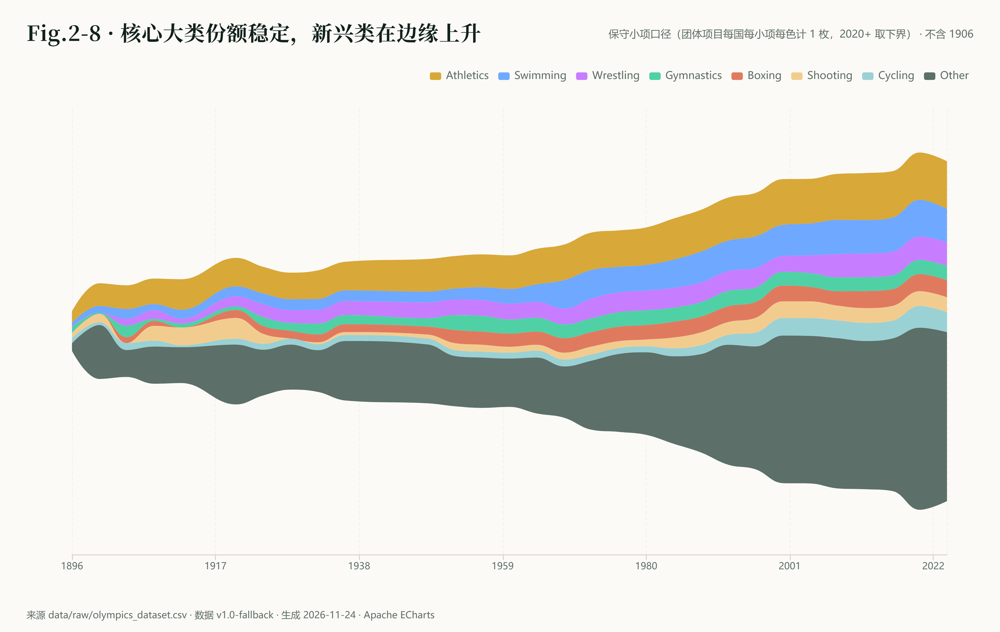
历史累计 Athletics 3,228 枚、Swimming 1,886、Wrestling 1,428、Gymnastics 1,048，四个大类构成稳定主干；但 Other 合计 7,555 枚，说明边缘项目的总量并不小，只是分散。河流图显示主干份额在百年尺度上缓慢收缩，1980 年代后新兴与边缘类持续加宽。
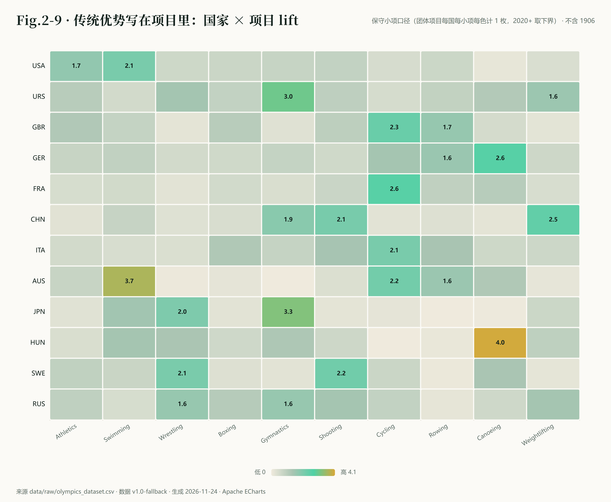
匈牙利皮划艇 lift 高达 4.04（93 枚），澳大利亚游泳 3.66（231 枚），日本体操 3.25（103 枚），苏联体操 3.05（179 枚），法国自行车 2.60，中国举重 2.45。120 个格子里只有 3 格完全没有奖牌——强国覆盖已相当完整，真正的超额优势仍集中在少数路径依赖型项目。
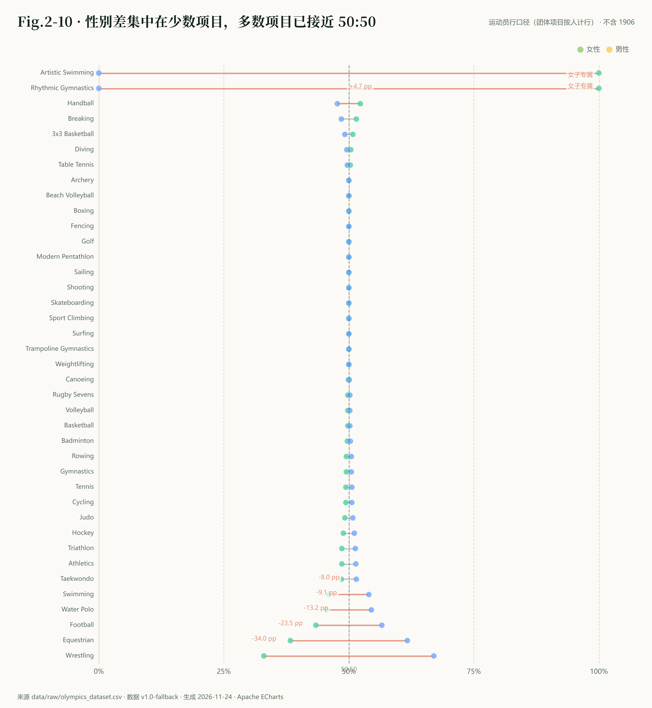
39 个入图项目中 31 个落在 ±4 pp 内，说明 2024 年的性别差是局部问题而非普遍现象。差距最大的是摔跤 −34.0 pp（女 96 人、男 195 人），其后是马术 −23.5、足球 −13.2、水球 −9.1。艺术游泳与韵律体操仍是女子专属。产出也不总与参与同向：足球女性参赛 43.4%，女性奖牌行却占 50.0%。
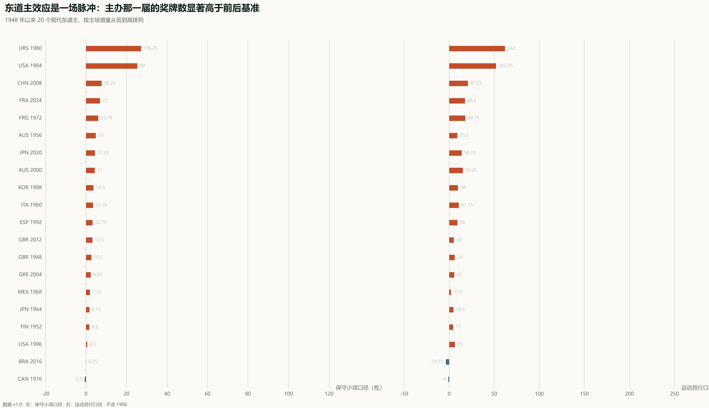
1948 年以来 20 个东道主，19 个在主办届高于前后基准，增量中位数 +13.3 枚、均值 +21.7 枚。苏联 1980（+106.3）与美国 1984（+99.0）领跑，但这两届恰逢互相抵制的"缺席红利"；剔除抵制届后均值降到 +12.7。法国 2024（+27.0）、中国 2008（+30.3）是近年最干净的脉冲；唯一负向的是加拿大 1976（−2.5）。
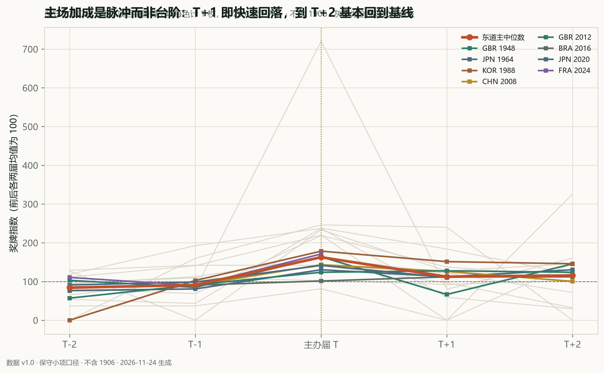
把时间轴拉开看：主办届指数中位数冲到 163，下一届即回落到 112、再下一届约 116——脉冲的大部分在一届之内蒸发。原因有两层：全项目参赛资格与主场投入是一次性的，下届即被收回；而东道主往往本就是上升期国家，T−1 指数只有 91，残留的 12–16 个百分点更多是趋势而非台阶。
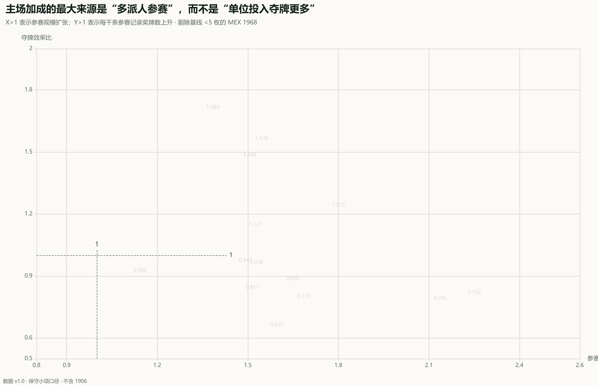
中位参赛规模比 1.60、中位夺牌效率比 0.90：东道主平均多派 60% 的运动员，但每千条参赛记录的夺牌率反而下降 10%。增量主体是"量的扩张"——全项目资格让主办国塞进大量边际选手，稀释了整体效率。真正提效的只有两类：抵制届（竞争被抽空）与西班牙 1992（小体量东道主靠优势项目集中爆发）。
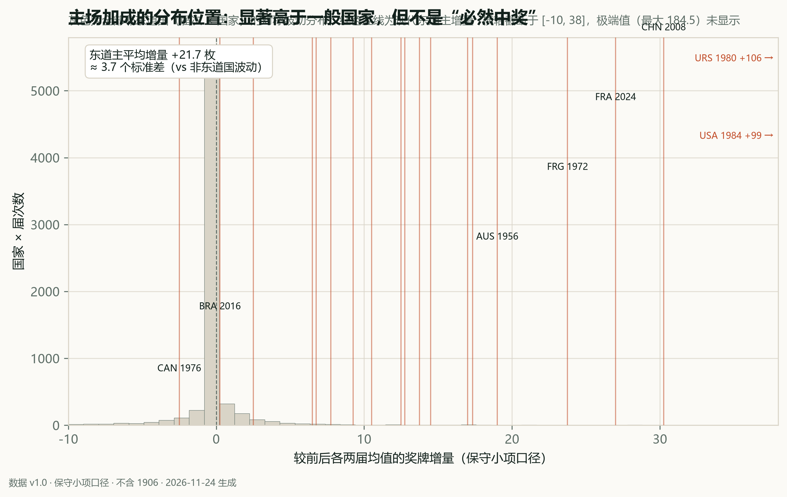
显著性检验给出同样的结论：一般国家的波动均值约 0、标准差 5.9 枚；东道主增量均值 +21.7 枚，约合 3.7 个标准差，20 个里有 17 个高于全部国家波动的第 98 分位。但"显著"不等于"必然中奖"：加拿大 1976 落在第 5 分位，巴西 2016 只到第 88 分位。正确的表述是——主办国大概率获得一个显著但幅度不定的脉冲。
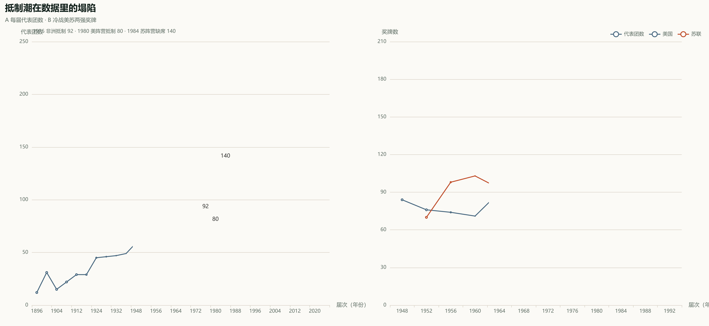
代表团数在 1972 年的 121 个之后连续塌陷：1976 年 92（非洲抵制）、1980 年 80（美国阵营抵制）、1984 年回升到 140 但苏联阵营整体缺席。奖牌曲线被政治切割得更明显——美国缺席 1980，苏联打出 195 枚峰值；苏联缺席 1984，美国打出 173 枚。这两次"主场大胜"的真实来源是对手集体缺席。
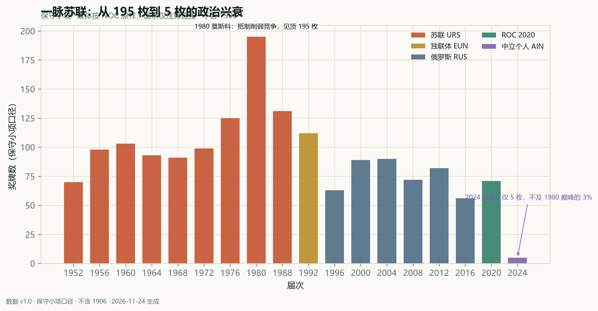
苏联一脉的曲线是最直白的证据：1980 年 195 枚见顶，1988 年仍有 131 枚；1992 年以独联体名义拿 112 枚；此后俄罗斯在 63–91 之间波动，只有鼎盛期的一半；2020 年以 ROC 名义 71 枚，2024 年只剩中立运动员的 5 枚。这种衰减幅度远超任何自然竞技周期，是政治实体兴衰的直接投影。
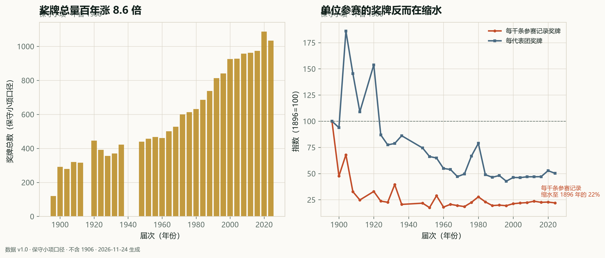
奖牌总数从 120 涨到 1,034（8.6 倍），代表团从 12 涨到 206（17 倍），参赛记录从 380 涨到 14,892（39 倍）——分母比分子涨得更快。于是每千条参赛记录的奖牌从 315.8 跌到 69.4（只剩 22%），每代表团平均奖牌从 10 枚减半到 5 枚。所谓"奖牌通胀"并不等于"拿牌变容易"。
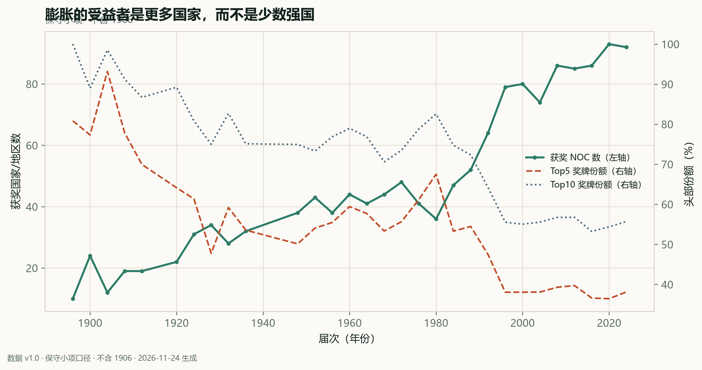
膨胀的果实被更多国家分走了：获奖国家从 10 个涨到 92 个，Top5 奖牌份额从 80.8% 跌到 38.1%，Top10 从 100% 跌到 55.7%。结构上，最大来源不是新项目——1984 年后才出现的运动在 2024 年只贡献 13.5%，而 1896 年就存在的核心大项靠内部增设小项（尤其女子小项）从 120 枚长到 549 枚，占 53%。
| 结论 | 直觉是什么 | 数据显示 |
|---|---|---|
| 一、榜首是分母的函数 | 美国最多、中国第二，是"事实" | NOC-aware 下美国 2,756、中国第 4；行口径下中国跌到第 7、法国升到第 3。名次随口径互换，因此任何排名都必须先声明分母。 |
| 二、主场是脉冲不是台阶 | 主办一次，国家实力就上了一个台阶 | 19/20 届高于基准、中位 +13.3 枚，但指数 163 → T+1 112 → T+2 116；增量来自"多派 60% 的人"，而不是夺牌效率（反而 −10%）。 |
| 三、总量平等，结构不平等 | 女性占比 49.1%，已经接近男女平等 | 总量确实接近半数，但摔跤 −34.0 pp、马术 −23.5、足球 −13.2；牙买加女性参与 55.6%、产出仅 16.7%。"接近半数"必须落到项目层才成立。 |
| 数字 | 含义与出现位置 |
|---|---|
| 17,935 | 历史奖牌单位（NOC-aware，不含 1906）· P3 / P4 / P15 |
| 702 | strict 与 NOC-aware 的历史总量差 · P3 / P15 |
| 2,841 | 团体项目在行口径下被重复计数的奖牌数 · P1 / P4 |
| 49.1% | 2024 年女性参赛占比 · P1 / P7 |
| −34.0 pp | 2024 年摔跤项目的男女参赛差 · P7 / P9 |
| +13.3 枚 | 东道主主办届相对基准的增量中位数 · P1 / P10 |
| 163 → 112 | 东道主奖牌指数：主办届 → 下一届 · P10 |
| 6,970 | 置换检验的零分布样本量 · P11 |
| 80.8% → 38.1% | Top5 国家奖牌份额的百年变化 · P13 |
| 局限 | 具体说明 | 影响范围 |
|---|---|---|
| 无外部变量，不能谈因果 | 未引入 GDP、人口、体育投入等数据。所谓"效率"仅指奖牌 ÷ 参赛人数，只能回答投入产出比，不能回答"为什么强"。 | Fig.2-7、S1 机制章节 |
| 2020+ 泛化取下界 | 2020/2024 的 Event 被泛化，NOC-aware 口径逐 NOC 拆分后仍可能低估近年奖牌；运动员行口径作为上界并置检验。 | 所有近年数字 |
| 巴黎 2024 无 T+1 | 东道主持久性只能观察到主办届与 T−1/T−2，2028 洛杉矶后才能回填 T+1/T+2 验证。 | Fig.3-2 末端 |
| strict 与 NOC-aware 差 702 | 同色并列与双铜牌的计法差异。本报告正文统一用 NOC-aware，引用任务二图表时保留原口径并在图注注明。 | 历史总量、国别累计 |
| 指标 | strict | NOC-aware | 运动员行 | 本报告采用 |
|---|---|---|---|---|
| 历史奖牌单位（不含 1906） | 17,233 | 17,935 | 38,818 | NOC-aware |
| 2024 奖牌单位 / 金牌 | 1,034 / — | 1,027 / 325 | — / 131 | NOC-aware |
| 美国历史累计 | 2,757 | 2,756 | 5,597 | NOC-aware |
这张表是本报告所有数字的唯一入口：正文中出现的任何一个"第一""增量""份额"，都可以在这里找到它的分母。若与图注数字不一致，以图注标注的口径为准，并在正文中已注明差异来源。
scripts/run_all.ps1 从原始 CSV 一键重建；不存在手工修改的中间结果。
| 阶段 | 入口 | 产出 |
|---|---|---|
| ① 数据体检 | task1-data/pipeline/01→04 | 清洗表、两套奖牌底表、21 项校验、质量说明书 |
| ② 百年全景 | task2-visual/pipeline | 10 幅图 JSON、指标总表、交互站点、离线单文件 |
| ③ 专题深挖 | task3-insights/pipeline | 东道主 / 地缘 / 通胀三组结论 + 10 幅图 |
| ④ 加分作品 | task4-bonus/build_dashboard.py | 单文件交互仪表盘（内联 Plotly，离线可开） |
powershell -ExecutionPolicy Bypass -File scripts\run_all.ps1
# 可选：-SkipTask1 跳过体检 / -SkipExports 只出 JSON / -Open 自动打开站点
| 类别 | 选型 |
|---|---|
| 数据处理 | Python 3.12 + pandas 3.0（任务一）、纯标准库管线（任务二/三） |
| 图表渲染 | Apache ECharts 5.5（站内 SVG/Canvas）、Plotly 5.24（加分仪表盘） |
| 图片导出 | Edge headless + puppeteer-core，PNG 4 倍分辨率 + SVG |
| 图资产 | 任务二 10 组、任务三 10 组，共 20 组 PNG@4x + SVG，全部登记于 contracts/figure_registry.csv |
每张图的口径、分母、是否含 1906、数据版本，都写在 contracts/figure_registry.csv 与 figure_caliber_matrix.csv 中，可与本报告图注逐条对照。
| 来源 | 说明 |
|---|---|
| Kaggle · Summer Olympics Medals (1896–2024) | 主数据，252,565 行参赛记录，含两个上游数据集（运动员信息与奖牌明细） |
| 许可 | CC BY-NC-SA 4.0（署名—非商业性—相同方式共享）；衍生清洗版本以同等许可开放 |
| 外部数据 | 未使用任何人口、GDP、经济指标；文中所有"效率"均为奖牌 / 参赛人数 |
| 作品 | 形式与位置 |
|---|---|
| 交互故事站 | 单文件离线版（1.16 MB），双击即开；开发版 npm run dev 于 5273 端口 |
| 交互仪表盘（加分） | 单文件 HTML（4.93 MB，内联 Plotly），11 图 / 5 标签页 |
| 图资产 | 20 组 PNG@4x + SVG，目录 task2-visual/exports、task3-insights/exports |
| 数据底表 | shared/metrics/metrics_master.csv、task1-data/metrics/ |